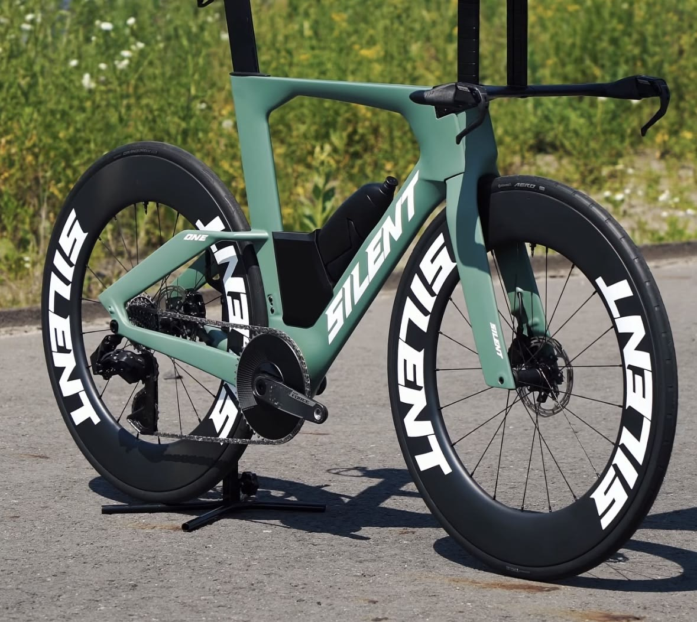
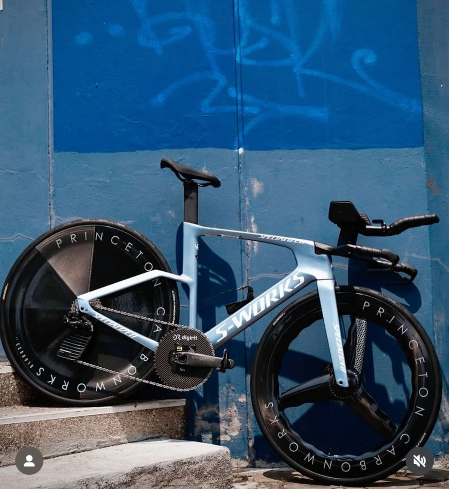
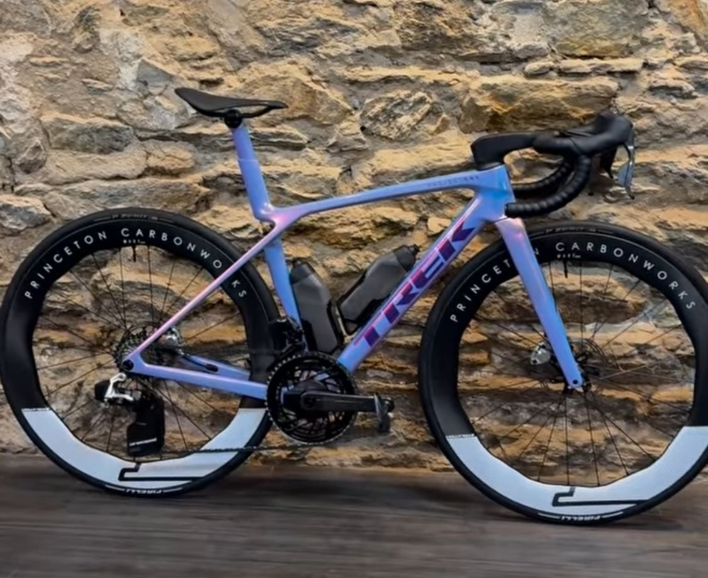

Photos





Vidéos
Choisissez une vidéo pour la rechercher sur YouTube. Les images sont des aperçus ; les fichiers vidéo ne sont pas encore dans le dépôt.



Choisissez une vidéo pour la rechercher sur YouTube. Les images sont des aperçus ; les fichiers vidéo ne sont pas encore dans le dépôt.